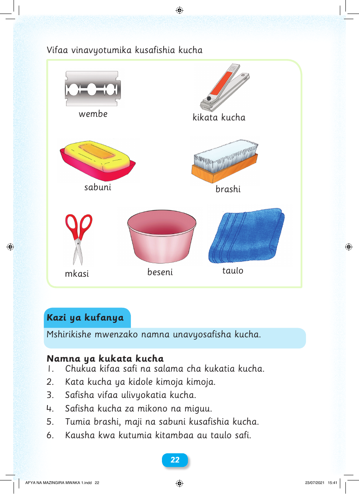

Vifaa vinavyotumika kusafishia kucha wembe kikata kucha sabuni brashi mkasi beseni taulo Kazi ya kufanya Mshirikishe mwenzako namna unavyosafisha kucha. Namna ya kukata kucha 1. Chukua kifaa safi na salama cha kukatia kucha. 2. Kata kucha ya kidole kimoja kimoja. 3. Safisha vifaa ulivyokatia kucha. 4. Safisha kucha za mikono na miguu. 5. Tumia brashi, maji na sabuni kusafishia kucha. 6. Kausha kwa kutumia kitambaa au taulo safi. 22 AFYA NA MAZINGIRA MWAKA 1.indd 22 23/07/2021 15:41